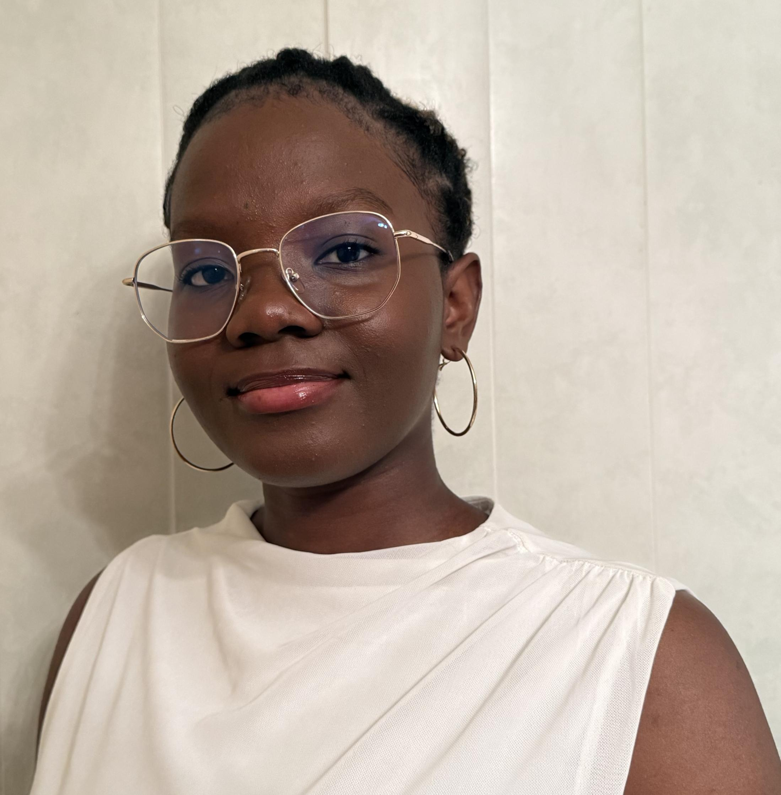

Darling-Mariah AKPO
Ingénieure Systèmes Embarqués
"Choisissez un travail que vous aimez et vous n'aurez pas à travailler un seul jour de votre vie."

Formation
Formations académique et personnelle
Ingénierie des Systèmes Embarqués Mobiles Autonomes et Connectés
ESIGELEC - École Supérieure d'Ingénieurs
- Concevoir et programmer des systèmes embarqués temps réel, et optimiser la gestion de l’énergie
- Appliquer des méthodes de développement pour garantir la qualité du logiciel et la performance des systèmes
- Appliquer des méthodes de développement pour garantir la qualité du logiciel et la performance des systèmes
- Percevoir et interpréter l’environnement à l’aide de capteurs variés (caméras, lidars, capteurs inertiels…)
- Analyser les images par IA
- Développer des solutions pour la mobilité autonome, incluant la planification de trajectoires et la connectivité entre systèmes
2024-2027
Formation en autodidacte
Formation personnelle
Apprentissage en autonomie des langages fondamentaux du développement Web : HTML, CSS, Javascript, React.js, Node.js (Express.js), PHP(Symfony), Python, ainsi que la base de donnée MongoDB
Depuis juin 2024
Expériences professionnelles
Parcours et missions réalisées
Stage ouvrier
GRAFNET - Bénin
Expérience professionnelle enrichissante avec des missions diversifiées
- Modélisation 3D avec SketchUp
- Initiation au développement web (HTML et CSS)
- Création de réseaux simulés avec Packet Tracer
- Familiarisation à la cybersécurité sous linux et utilisation pratique des commandes Linux dans le terminal
Employée polyvalente
JOKOANI - France
Expérience professionnelle enrichissante avec des missions diversifiées
- Accueil des clients
- Prise de commandes et service à table
- Rangement des espaces de jeux et participation à la fermeture de l’établissement
- Travail en équipe et gestion du stress dans un environnement dynamique
Projets
Mes projets personnel et académique
Robot Quadrupède
Mai 2026
Ce projet s’inscrit dans le cadre du projet S8 de l’ESIGELEC, au sein du département SEI. L’objectif est de développer un robot quadrupède capable de détecter, analyser et monter des escaliers de manière autonome. Je me suis occupée de la partie perception avec une approche IA.
- Teachable machine
- Roboflow
- ROS1/ROS2
- Entraîneent d'un modèle Yolov8
- Utilisation d'une Realsense
🎓 Projet académique
Robot Mobile
Novembre 2025
Le projet consistait à programmer un robot capable de suivre une ligne blanche au sol, tout en détectant et évitant les obstacles sur son chemin. Lorsque la ligne n’était plus visible, le robot devait utiliser un capteur de lumière pour se diriger automatiquement vers la zone la plus éclairée, afin de retrouver une direction cohérente ou atteindre une zone cible. Je me suis occupée de la partie détection d'obstacles.
- Code Composer Studio
- C/C++
- Timers, Interruptions, Registres
- Utilisation d'un capteur ulstrason
🎓 Projet académique
Gestion de choix de dominantes
Février – Mai 2025
Développement en équipe d’une application permettant d’automatiser le processus de sélection et d’affectation des dominantes des étudiants FISA (apprentis) et FISE (classiques), en fonction de leurs choix et de leur rang.
- Java
- Oracle
- GitHub
- draw.io
🎓 Projet académique
MiamFinder
Juin 2025
Réalisation d'une application web interactive permettant à l'utilisateur de trouver des recettes de cuisine en effectuant une recherche par mots-clés (en anglais). Le projet utilise l'API publique TheMealDB pour récupérer dynamiquement les données des recettes, affichées ensuite de manière claire.
- HTML
- CSS
- Javascript
- API TheMealDB
- GitHub
👤 Projet personnel
Jeu de culture Générale
Juin 2025
Conception et développement d'un jeu interactif de culture générale. Ce jeu se présente sous forme de questionnaire à choix multiples. À la fin du quiz, le joueur reçoit son score total, ainsi qu'un message personnalisé d'encouragement en fonction de ses performances.
- HTML
- CSS
- Javascript
- GitHub
👤 Projet personnel
Compétences
Mes savoir-être et savoir-faire
Savoir-être
- Organisation
- Autonomie
- Créativité
- Esprit d'équipe
- Curiosité scientifique
Savoir-faire
- C/C++ pour l'embarqué, Python, Java, SQL
- Linux embarqué (BeagleBone) et temps réel
- Vision par ordinateur et IA (opencv, yolo)
- Notions de ROS1 et ROS2
- UART, SPI, ITM, I2C
- MSP430, STM32
- HTML/CSS/Javascript, Oracle/MongoDB
- Git/GitHub, Vscode, Virtualbox
À propos de moi
Étudiante en ingénierie des systèmes embarqués, passionnée par la robotique, l’IA embarquée et l’intégration matériel‑logiciel. Curieuse, rigoureuse et motivée, j’aime comprendre comment fonctionnent les systèmes en profondeur et transformer des idées en solutions concrètes. Même si je n’ai pas encore toutes les compétences recherchées, je suis prête à apprendre rapidement, à m’investir pleinement dans les missions et à monter en compétence pour répondre aux besoins de l’entreprise.
Localisation
Rouen (76)
École
ESIGELEC - École d'ingénieurs
Vie associative
Chargée de communication ESIG'DANCECREW
Langues
Français, Anglais
Contact
Discutons de vos projets et de la manière dont je peux y contribuer
Informations Pratiques
Disponibilité
Dès septembre 2026
Mobilité
Toute la France